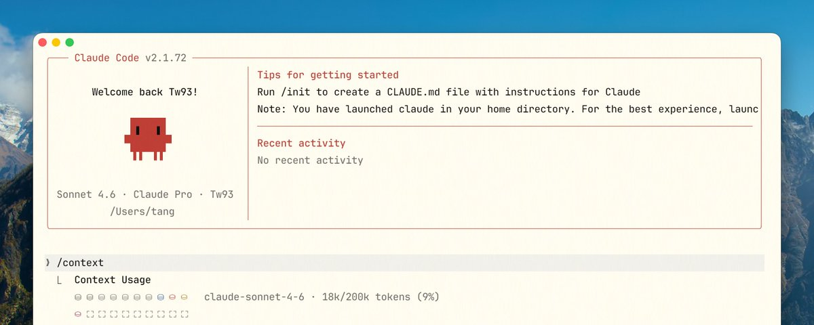

你不知道的 Claude Code：架构、治理与工程实践
六层一起看，只拧一层就会失衡
先看这五句
- 这不是 Prompt 问题。上下文越来越乱、工具越多越差、规则越写越不遵守，多半是系统设计如此：核心是循环代理，不是一次性回答。
- 上下文卡住的通常不是容量，是太吵。五个 MCP 就能吃掉约 12.5% 的 200K；工具输出和压缩还会把决策理由一并扔掉。
- 原语各管一层。新动作用 Tool/MCP，工作方法用 Skill，隔离用 Subagent，强制约束用 Hook，跨项目分发用 Plugin。
- 没有 Verifier 就没有工程上的 Agent。说不清「怎样才算做对」，就不该交给它自主完成。
- CLAUDE.md 是协作契约，不是知识库。短、硬、可执行；大资料进 Skills，路径差异进 rules。

这是一份阅读笔记，不是原文转载。Tw93 把自己半年、两个账号每月 40 刀换来的踩坑，收成一份 Claude Code 工程手册：底层怎么转、上下文为什么脏、Skills/Hooks/Subagents 怎么用、Prompt Caching 如何约束架构，以及 CLAUDE.md 该写什么。
六层与底层循环
作者把 Claude Code 拆成六层来看。只强化其中一层，系统就会失衡：CLAUDE.md 写太长，上下文先污染自己；工具堆太多，选择就糊；subagents 开得到处都是，状态漂移；验证跳过，出了问题不知道挂在哪。
卡住的地方几乎从来不是模型不够聪明，更多时候是给了它错误的上下文，或者写出来了但根本没法判断对不对。
真正要盯的五个面：结果不稳，先查上下文加载顺序；自动化失控，先看控制层有没有设计；长会话质量掉，多半是中间产物把窗口挤脏了——换新会话往往比再调 prompt 有用。
概念边界可以记成一句：给它新动作用 Tool/MCP，给它一套工作方法用 Skill，隔离执行环境用 Subagent，强制约束和审计用 Hook，跨项目分发用 Plugin。
上下文工程
很多人把上下文当容量问题。作者认为卡住的通常不是不够长，而是有用信息被淹没。200K 并非全部可用：一个典型 GitHub MCP 带 20–30 个工具定义，每个约 200 tokens；接 5 个 Server，固定开销就能到 25,000 tokens。
实践：CLAUDE.md 短、硬、可执行，优先写命令、约束、架构边界（官方自己大约 2.5K tokens）；大参考拆到 Skills 的 supporting files；路径/语言规则放 .claude/rules/；任务切换优先 /clear，同任务新阶段用 /compact，并把 Compact Instructions 写进契约，压缩后必须保留什么由你定。
动态噪声同样致命。cargo test 一次几千行，Claude 真正需要的只是「过了还是挂了，挂在哪里」。RTK（Rust Token Killer）用 Hook 在输出进窗口前过滤。默认压缩按「可重新读取」删早期 tool output，连架构决策一起扔——解法是 Compact Instructions，或开新会话前写一份 HANDOFF.md。
Plan Mode 把探索和执行拆开：探索只读，方案确认后才发生执行成本。复杂重构比「急着出代码」稳得多。
Skills、工具与 Hooks
Skill 是按需加载的工作流：描述符常驻，正文按需展开。好 Skill 的描述回答「何时该用我」，不是「我是干什么的」；要有步骤、输入、输出和停止条件；有副作用的显式关掉自动调用。
三类典型：检查清单（质量门禁）、工作流（标准化高风险操作）、领域专家（按固定路径收集证据）。反模式：描述过短、正文几百行、一个 Skill 覆盖五件事、危险 Skill 允许自动调用。
给 Agent 的工具不像给人的 API。重点不是功能齐全，是让它更容易用对：名称按系统分层、大响应支持 concise/detailed、错误要教怎么改、能合并成高层任务就不要暴露碎片工具。
内部工具演进是同一课。问用户：给 Bash 加 question 参数会被忽略，约定 markdown 格式会忘，做成独立的 AskUserQuestion 才稳。搜索从 RAG 换成 Grep 后，模型开始递归读 Skill 引用——后来叫渐进式披露。模型变强后，曾经有用的 Todo 提醒反而成了枷锁，要定期回看限制还成不成立。
Hooks 把不能临场发挥的事收回确定性流程：保护文件、Edit 后 lint、SessionStart 注入环境、完成后通知。不适合复杂语义判断。三层叠加：CLAUDE.md 声明必须过测试，Skill 教顺序和修法，Hook 对关键路径硬校验。
缓存、验证与 CLAUDE.md
Prompt Caching 按前缀匹配。静态系统 prompt、工具定义要稳；时间戳、打乱工具顺序、中途增删工具都会打坏缓存。动态信息放到下一条消息的 <system-reminder>，不要塞进系统 prompt。会话中途切模型等于为新模型重建缓存，往往比继续用原模型更贵。
Compaction 用一次 fork 调用做摘要，命中缓存只需约 1/10 价格。直觉上 Plan Mode 该换成只读工具集，但这会破坏缓存，所以实际用模型自己调用 EnterPlanMode，工具集不变。MCP 用 defer_loading stub，完整 schema 经 ToolSearch 再加载。
| Verifier 层 | 例子 |
|---|---|
| 最低 | 退出码、lint、typecheck、单测 |
| 中间 | 集成、截图对比、contract、smoke |
| 更高 | 生产日志、监控、人工审查清单 |
CLAUDE.md 只放每次会话都得成立的事：怎么 build/test、模块边界、NEVER 列表、Compact Instructions。不放背景、完整 API、空泛原则。纠正一次错误后，让它自己更新契约；再定期用健康检查清掉过时条目。作者把六层检查收成开源 Skill tw93/claude-health。
三个阶段：会用功能 → 会配约束 → 让 agent 在约束下自己跑。说不清「什么叫做完」，就不适合直接扔给它自主完成。